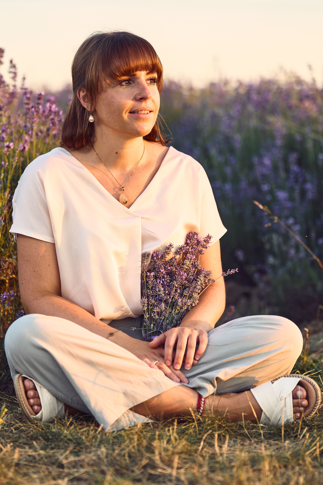
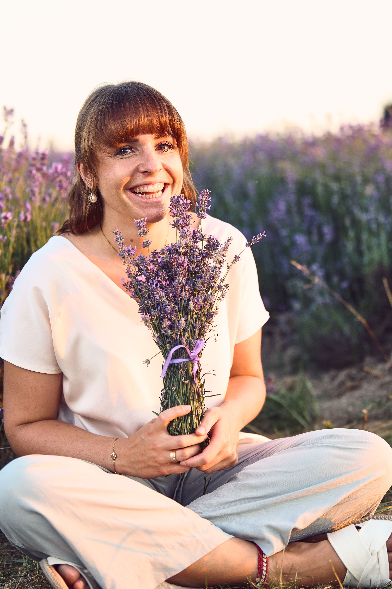

Was verbinde ich mit der Osteopathie
Es ist mein großer Herzenswunsch, eine Veränderung bei den Menschen bewirken zu können.
Seit Tätigkeitsbeginn in der Schulmedizin beschäftigt mich täglich die Frage, wodurch dem Menschen wirklich geholfen werden kann. Der Kreislauf aus Beschwerden – Medikamente – weitere Beschwerden ist für mich ermüdend geworden und ich wollte etwas finden, dass den Ursprung von Symptomen auffindet und beheben kann. Ein Symptom kommt an die Oberfläche, weil es gesehen werden möchte. Wir haben etwas zu verändern, darauf macht uns unser Körper aufmerksam. Medikamente einzunehmen ist zwar oft der leichtere Weg, aber in meinen Augen nicht der Zielführende. Unser Körper ist der wichtigste Verbündete und so sollten wir ihn schätzen und behandeln.
Osteopathie bedeutet für mich, neue Wege in der Behandlung von unterschiedlichen Symptomatiken zu erarbeiten. Das setzt voraus, dass ich mir als Osteopath ausreichend Zeit nehme und der Mensch dazu bereit ist, selbst etwas verändern zu wollen. Weniger Schmerzen bedeutet mehr Lebensqualität. Nach dieser Divise arbeite ich.
Die Osteopathie ist meine Leidenschaft. Mein Handwerk. Etwas, dass mich antreibt.
A.T. Still (1828-1917): „Gesundheit ist Aufgabe des Osteopathen, Krankheit kann jeder finden!“
Wer steckt hinter Kameos
seit 2010 bin ich als Medizinische Fachangstelltin in der Kinderarztpraxis. Zuerst bei Dr. Hartig in Vilsbiburg und bis heute bei Dr. Westphal in Taufkirchen. Ich liebe den Kontakt zu Menschen, vor allem zu Kindern. Ich möchte jedem Patienten die Zeit geben, die er benötigt und mich gegen die aktuelle Zeit stellen, die dominiert wird durch Druck um Zeit und Geld. Vor allem gegen das Idealbild von "der Mensch muss perfekt sein". Im Unperfekten liegt das Perfekte und in der Achtsamkeit der Gewinn.
Während ich nebenberuflich in der Ergotherapie tätig war, konnte ich feststellen, welche tollen Auswirkungen eine Arbeit hat, die mit nichts anderen als den Händen durchgeführt wird und vor allem wie der Körper reagiert, wenn er nur etwas Zeit und Geduld bekommt. Auf der Suche, wirklich etwas bewirken zu können, den Menschen ein klein bisschen Leid zu nehmen und weil mir mein Wissen irgendwann nicht mehr genug war, habe ich 2020 2 Jahre die Heilpraktikerschule besucht und anschließend vom Gesundheitsamt die Erlaubnis zur Ausübung der Heilkunde erhalten. Die letzten Jahre habe ich diversen Weiterbildungen in der Ernährung nach TCM, in der Spagyrik und Phytotherapie absolviert. Seit 2022 bereichere ich mich selbst mit der Weiterbildung als Osteopathin und habe ebenso eine Ausbildung in der Homöopathie begonnen. Die Kombination Schulmedizin zur Alternativmedizin ist für mich der richtige Ansatzpunkt.
Ich nicht wie eine Ibuprofen, die sofort vermeintlich alles wegzaubern kann. Jedoch mit etwas Geduld und Eigenwillen, können wir Veränderungen bewirken. Genau diese Veränderungen - seien sie auch noch so klein - bereiten mir die größten Glücksmomente.
Wer ich sonst noch bin? Wenn mich jemand fragt, wofür mein Herz außerhalb der Medizin schlägt, so würde ich antworten: für die Natur, für das Reisen, für gutes Essen, für alle kreativen Gestaltungsmöglichkeiten, für die Musik und meine Liebsten. Wenn mich jemand fragt, wo ich am liebsten bin, so würde ich antworten: am Wasser oder in den Bergen. Wenn mich jemand fragt, welcher Ort für mich der Schönste ist, so würde ich antworten: mein Garten inklusiv meiner vielen kleinen Gartenbewohner.
